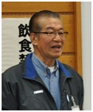
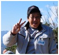
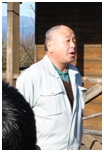
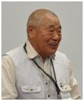

ホーム ／ スタッフ紹介
スタッフ紹介
報徳楽校では、みんなフィールドネームで呼び合います。農業に詳しい人、自然の遊び方を知っている人、行政との調整が得意な人。いろいろな大人が集まっています。

報徳楽校 校長
八ちゃん
横田八郎
小田原報徳実践会 会長
元・番組制作会社 取締役制作部長／デザイナー
小田原市はじめ近隣の行政の方々との人脈があり、学校関係を含めた行政との調整を一手に引き受けています。デザイナーでもあり、企画全般を担当。とても頼りになる存在です。

報徳楽校 副校長
ジャンボさん
杉田謙一
小田原報徳実践会 副会長／杉田商工株式会社 代表
農業機器販売・農業指導
この地域の農業に詳しく、農業関係者なら誰もが知っている存在です。イベントにもたくさん参加し、農業についていろいろと相談にのってくれます。大きな身体で子どもたちに人気です。
報徳楽校 教務主任
かずさん
水野和則
自然学校指導者インストラクター
（平成18年 日本環境教育フォーラム 自然学校指導者講座修了・8期生）
全国森林インストラクター
NEALインストラクター（自然体験活動上級指導者）
企画から実施、保護者への連絡まで、楽校活動の全体を担当するディレクターです。参加のお申し込み・お問い合わせは、かずさんが受け付けています。

支援スタッフ
はたのさん
波多野信輝
小田原報徳実践会 幹事
電光プランニング 電気技師
報徳楽校では支援スタッフの中心的存在として、頼りになる存在です。

相談役
かいちょう
田嶋享
小田原報徳実践会 名誉会長／NPO法人 報徳食品支援センター 代表
元・神奈川県都市農業推進審議会委員
報徳農場を立ち上げて20年以上。尊徳翁の教え「荒れ地を放置するは大罪なり」を自ら実践し、地域の休耕地を借り受けて野菜と米を生産しています。